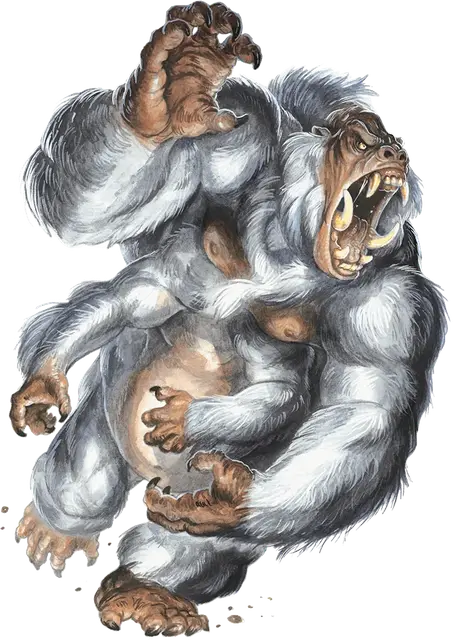

Гираллон
Girallon
Большой Монстр, без мировоззрения

Класс Доспеха 13
Хиты 59 (7к10 + 21)
Скорость 40 футов, лазая 40 футов
| мод | спас | ||
|---|---|---|---|
| СИЛ | 18 | +4 | +4 |
| ЛОВ | 16 | +3 | +3 |
| ТЕЛ | 16 | +3 | +3 |
| мод | спас | ||
|---|---|---|---|
| ИНТ | 5 | −3 | −3 |
| МДР | 12 | +1 | +1 |
| ХАР | 7 | −2 | −2 |
Навыки Восприятие +5, Скрытность +5
Чувства тёмное зрение 60 футов, пассивное Восприятие 15
Опасность 4 (1100 опыта)
Бонус мастерства +2
Среда обитания Лес
Действия
Мультиатака. Гираллон совершает одну атаку Укусом и четыре атаки Когтями.
Укус. . Рукопашная атака оружием: +6 к попаданию, досягаемость 5 футов, одно существо. Попадание: 7 (1к6 + 4) колющего урона.
Когти. . Рукопашная атака оружием: +6 к попаданию, досягаемость 10 футов, одна цель. Попадание: 7 (1к6 + 4) рубящего урона.
Бонусные действия
Агрессия. Гираллон может переместиться на свою скорость к враждебному существу, которое он может видеть.
Описание
Гираллон выглядит как четырехрукая горилла–переросток с серой кожей и белым мехом. От обычной обезьяны его также отличают клыки и когти, выдавая в нем чудовищного хищника.
Гираллоны наиболее распространены в умеренных и теплых лесных местностях, богатых жизнью. Они разделяют навыки умелого лазанья, которыми наделены обычные обезьяны, однако эти полутонные существа стараются не вскарабкиваться на деревья, которые не выдержат их веса. Руины, где раньше жили гуманоиды, особенно находящиеся в лесной глуши или джунглях, похоже, привлекают гираллонов. Для гираллона здания в городе – просто другая разновидность леса, но, что хорошо, «ветви» этого леса могут выдержать вес существа. В такой среде гираллоны применяют свои навыки лазанья на полную. Существа могут легко взобраться на стену здания или защитные сооружения, а затем засесть на крыше или другой высокой точке обзора, чтобы следить за окружающей местностью.
Когда гираллоны не могут карабкаться они рыщут по подлеску, скрываясь в узких оврагах или неглубоких пещерах, либо прячутся в каких–нибудь руинах, дожидаясь, пока поблизости пройдет жертва. Для своего размера и с учетом отсутствия у него камуфляжа гираллон удивительно хорошо прячется.
Гираллоны собираются в небольшие стайки, состоящие из нескольких особей и их детенышей, обычно возглавляемых доминирующим самцом, которым обычно бывает самый старший член группы. Охотясь вдали от логова, гираллоны общаются друг с другом на расстоянии с помощью рыков и языка тела. Обычно каждая особь охотится самостоятельно, находясь при этом достаточно далеко от других, чтобы каждому досталось достаточно пищи. Вожак может организовать членов стаи для совместной охоты, если добыча крупная. Если охота пройдет удачно, каждому в группе достанется его доля, а лучшие части полагаются матерям, заботящимся о детенышах.
Странная внешность гираллонов и их притяжение к руинам приводят ученых к выводу, что гираллоны были созданы магией, чтобы служить стражниками в какой–то забытой империи. Когда многие годы назад империя пала, гираллоны одичали и распространились по миру.
Многие существа пытались приручить, подчинить или сосуществовать с гираллонами. Например, юань–ти порабощают гираллонов, превращая их в приграничных стражей в своих змеиных королевствах. Благодаря тому общеизвестному факту, что гираллоны между собой не враждуют, некоторые гуманоиды научились обращаться к вожаку стаи, преподнося пищу и другие подарки в надежде установить альянс с существами.
Если с гираллонами хорошо обращаться, они могут согласиться служить стражей, хотя у них не хватит интеллекта на задания более сложные, чем нападать на незнакомцев, вторгающихся в их владения. Воспитанный должным образом с юного возраста гираллон может в итоге оказаться в достаточно неожиданном месте, например его можно обнаружить охраняющим вход в городскую гильдию воров. Желающим содержать гираллона в качестве питомца следует быть осторожными, потому что существо может внезапно вернуться к своей хищнической природе в любой момент.